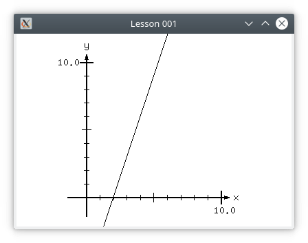

Perhaps you also noticed that it has the form $y = mx + c$
You may have also already know that the equation $y = mx + c$ is often called the slope-intercept form of the equation of a line.
You may also know that to represent a line as graph usually involves a coordinate system.
The coordinate system shows you which way positive values of $x$ increase, and which way positive values of $y$ increase.
They also show where the starting value of $x$ and the starting value of $y$ is located.
The starting value of $x$ is usually 0 and $y$ is usually 0, and is called the origin.
They usually also indicate how to measure distance along $x$ and $y$. Little perpendicular line segments are drawn associated with some number and unit.
This makes it possible to draw a point on the graph by referring to its location as a pair of numbers, one for the x location of the point, and one for the y location of the point.
Such pairs of numbers are usually written like this: $(x, y)$
ASSIGNMENT: Your assignment is to add a coordinate system to your line graph, using JGlut, similar to the one shown.
The coordinate system shall be centered in the window, and shall scale at the same rate both horizontally and vertically.
The coordinate system shall indicate its horizontal and vertical scale, which shall be identical, both with little perpendicular line segments, and with numeric values
